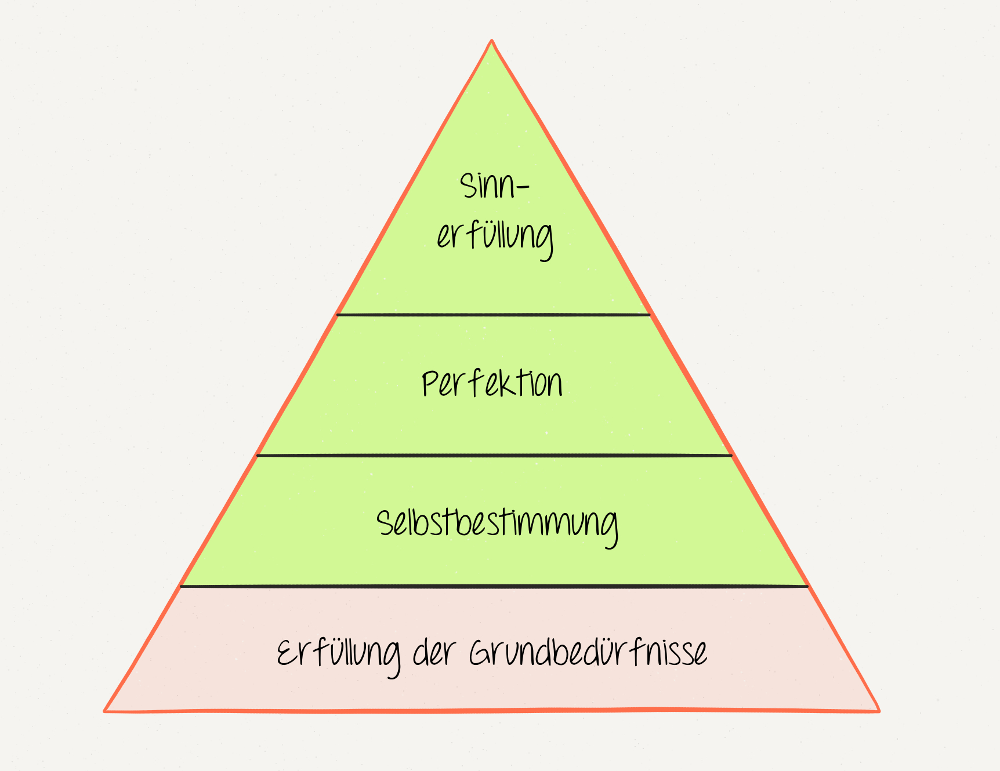
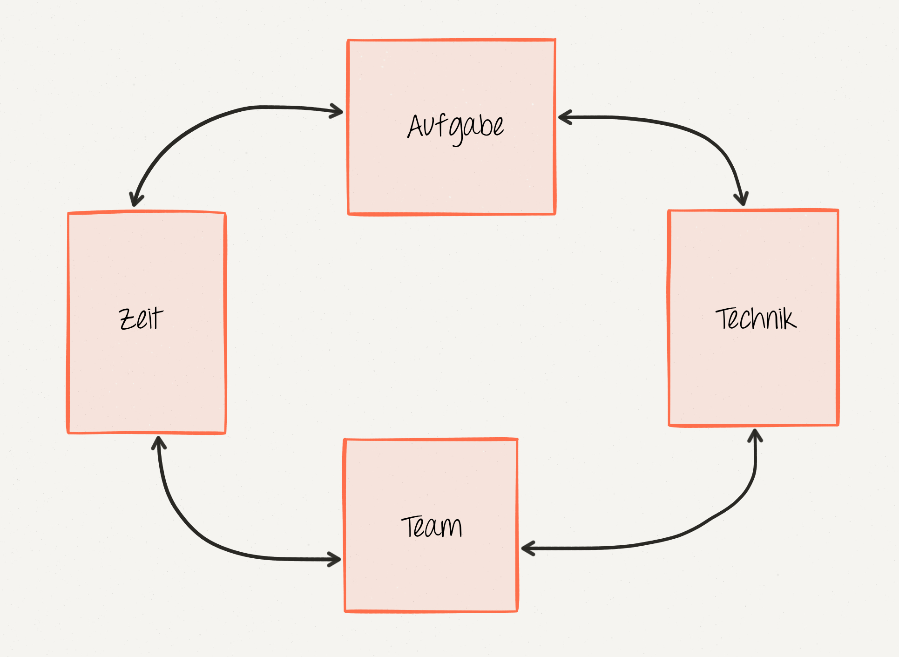
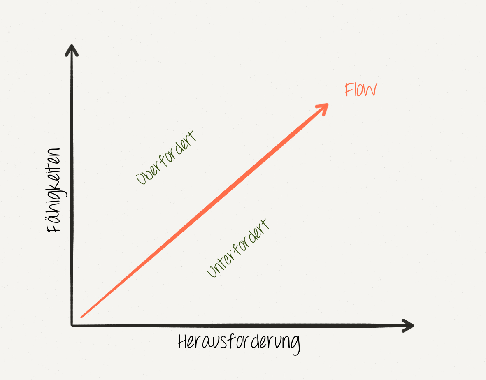

Menschen arbeiten zum Lebensunterhalt.
Menschen benötigen etwas das Ihre Motivation zu arbeiten fördert.
Extrinsische Motivation
Menschen arbeiten zur Sinnstiftung.
Menschen benötigen etwas auf das sich Ihre Motivation abbilden lässt.
Intrinsische Motivation
Die Charakteristik der Aufgabe ist maßgeblich entscheidend darüber, ob sich eine bestimmte Art der Motivation positiv oder negativ auf die Leistung auswirkt.
Extrinsische Motivation
Intrinsische Motivation
Zuckerbrot und Peitsche.
Vier Level der intrinsischen Motivation.
Das Streben nach Selbsterhaltung.
Das Streben eigenverantwortlich zu handeln.
Das Streben in einem Themengebiet/Sache immer besser zu werden.
Das Streben nach etwas höherem.
Je mehr Bedeutung ein Mitarbeiter der Entlohnung bemisst desto größer ist das Hemmniss für Kreativität